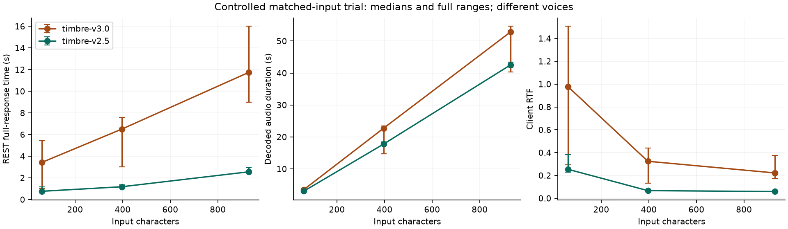
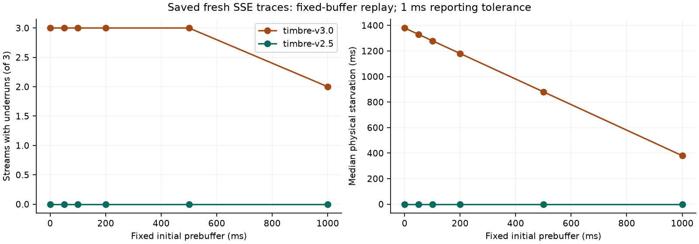

Hear the evidence.
Inspect the output.
A complete, offline walkthrough of the public speech benchmark: original audio, frozen references, actual transcripts, TTS prompts, human marks, model comparisons and failure analysis.
Tests collected 13–15 November 2026. This page replays saved public evidence; it makes no API calls. Multiple requests can use the same text or audio. Catalog record counts are not independent speakers or unique utterances.
30 controlled runs and 60 earlier files are different sets.
Controlled REST timing cohort
2 models × 3 texts × 5 successful repeats = 30. There is one text per length group: 61, 396 and 930 characters. Two short warm-up requests are excluded: 32 controlled REST requests total.
Earlier completed-file waveform cohort
The 18 earlier timing runs used three repeats per model/length. The remaining 42 outputs cover expression tags, neutral speech, invalid tags, speed, numeric inputs, sample rates and successful rechecks. Six earlier SSE files are separate.
Per-case cohort membership · Count definitions and assertions
Frozen source references and separate evidence cohorts.
Recognition method
Corpus WER/CER sums edits and reference length before division. Unicode NFC, case folding and Unicode-digit normalization are documented. Empty-reference controls have undefined WER/CER and separate false-transcription checks. Noise/codec derivatives retain parent IDs.
Original dataset transcripts can contain reference errors. Speakers recur across cohorts; transformations are not new speakers. The new MInDS-14 banking sample is 8 kHz US English with unknown speaker identity and only the frozen target word “account.”
Synthesis evidence
The original 164 clips support selected human content scores. The earlier 66 valid functionality outputs, 30 controlled timing runs, socket warm-ups and new listening material have different purposes. Blank human marks are excluded from correctness.
Four existing unique human naturalness ratings are exploratory. Audio-model ratings remain provisional; the judge missed a planted 900 ms gap. New independent listening/rewrite scores remain uncollected.
Dataset attribution · Normalization, rubrics and measurement definitions · Input hashes and provenance
Listen to the input and inspect what changed.
Examples below are deliberately failure-enriched. Highlighting aids reading; numeric WER uses the custom normalized Levenshtein implementation. Differences against a dataset label do not by themselves prove every reference word was spoken correctly.
All five no-speech controls
Same source, changed model, hint or acoustic condition.
Verbatim / codemix output exploration
Actual outputs are retained. Intentional output-script changes are not graded here as ordinary transcription errors; no script-aware quality advantage is claimed.
Complete format outputs in the evidence data; also shown in the executed notebook and public clip catalog.
Fluent audio can still change a critical value.
Human percentages apply to explicitly marked targets in selected clips. One clip can have multiple targets. “Ambiguous” fails strict correctness without proving omission. No complete human TTS transcript is invented from target-only marks.
Naturalness, prosody and audio-integrity checks
The four unique human ratings have mean naturalness 4.50/5 and prosody 5.00/5 from one listener; this is not population MOS. All 164 original WAVs decode nonempty. Four level flags and 22 internal-quiet flags are diagnostics, not confirmed perceptual defects. Placeholder length headers with valid PCM differ from empty WAV failures. Browser playback preserves decoded PCM while repairing headers when needed.
Earlier neutral-prompt audio-model ratings were 3.22/5 naturalness and 3.11/5 prosody for both configurations on nine clips each. They do not establish superiority; the planted-gap control failed model detection.
Compare completed speech and measured response wait.
The audio players start saved speech immediately. The displayed REST times measure dispatch to complete response body, not audio duration or TTFA. Each selected player is its model’s median-latency run among five successful repeats for the selected text. Voices differ: Tarika / Kaveri.

Client RTF = each request’s full-response time / its decoded audio duration. Longer v3.0 audio does not alone account for its higher client RTF. Compute, queueing, preprocessing and network components cannot be separated without provider traces. Open the focused timing-replay comparison.
Earlier timing, voice and round-trip experiments
The original single-model timing study used six prompts × five trials = 30 observations. It is a different historical cohort from the latest two-model controlled 30-run comparison. The CSV outputs are retained separately.
Voice and 15-versus-50 probes
Prisma round-trip transcripts are machine diagnostics, not independent human ground truth. Listener comments such as “not sure” are not converted into definitive correctness scores.
Hear the difference between saved speech and arrival-timed playback.
Concatenated PCM omits network starvation. The reconstructed files retain measured startup and insert zeros only while the playout buffer is empty. These are offline reconstructions, not live handset recordings. Natural sentence pauses inside delivered PCM are a separate phenomenon.

32 saved traces = 14 earlier N8 SSE + 6 later SSE + 10 measured warm WebSocket + 2 cold WebSocket warm-ups (R4-WARM-WS-3-1, R4-WARM-WS-25-1). The two cold traces enter offline buffer replay but are excluded from warm TTFA results. 32 × 6 buffers × 3 reporting tolerances = 576 replay conditions. Full trace provenance. Added buffering increases simulated startup. Future-aware earliest gap-free start is a separate non-causal bound; it is not observed online TTFA. No production buffering threshold is selected. Earlier 14-trace reconstruction · Exact chunk/buffer log.
Raw text versus an explicit spoken rewrite.
The nine complete historical human pairs contain eight fixes and one failure on both variants. They were selected from failures. The ten new v2.5 pairs were prepared under frozen rules and have no human correctness outcomes yet. Generated audio alone does not prove a fix or a general gain.
HTTP success is not always usable audio.
Seven HTTP 200 responses contained no audio samples
The server returned HTTP 200, but each response was a 44-byte WAV header with zero decoded PCM samples and 0.000 seconds of audio. These are recorded generation failures: six earlier follow-up responses and one later listening-set response, all from Timbre v3.0. Some are separately identified rechecks, rather than seven unique prompts.
What could happen during a call? If synthesis returns no samples and the application does not recover, a caller could hear silence or miss a reply. This is a potential impact inferred from the failure, not an observed handset result. The bundled call demo uses WebSocket audio, while these seven failures are REST responses; the same failure rate or behavior cannot be assumed. The demo has a receive timeout and error handling, but no explicit zero-audio-completion check or automatic speech fallback. Add positive-audio validation, a bounded retry/fallback and live-call tests before relying on it.
Notebook location: final_evaluation.ipynb, section 18. Disjoint HTTP outcomes, retries and empty PCM. Counting all cells from 1: cell 38 explains the results; cell 39 contains the executed tables, shown as In [19]. The saved outputs include all seven rows. The later listening-set failure is also described in section 22 (cells 46–47, code In [23]). Complete attempt ledger.
Handling recommendation: require a successful HTTP response and successful audio decoding with a positive sample count before handing the result to playback. Record empty output as a failure, apply a bounded retry or tested fallback, and retain the original failed attempt. No cause or universal failure rate is established by these diagnostic cases.
All unsuccessful attempts, including HTTP errors
Separate trials, explicit rechecks and HTTP retries have separate IDs. The earlier 74 attempts include six SSE requests, one recovered HTTP 500 and one expected tag-only HTTP 400. Sixty-six valid attempts out of 74 differs from 66 eventual successful cases out of 73. These diagnostic rates are not population reliability estimates.
First-round concurrency and short soak
At eight simultaneous requests, ASR completed 8/8 with six retried; TTS completed 2/8 after retries. The ten-minute, low-rate soak completed 30/30 requests. Request concurrency is not concurrent-call capacity or long-load reliability.
Anonymous independent listening study · Uncollected three-listener score sheet
Search every included transcript, prompt and playable output.
Includes primary public inputs and saved comparison/format/timing/voice experiments. Records are requests/conditions, not unique speakers. Empty-audio failures are listed above instead of being offered as playable speech. TTS machine transcripts are explicitly provisional.
Export the full catalog CSV · Source/display audio hashes and remux checks
One detailed notebook, retained outputs, local evidence.
Open final_evaluation.ipynb for the complete public test walkthrough. Every code cell is executed in replay mode and its output retained. Source requests/responses, all per-clip tables and the custom metric implementation are under evidence/. The readable report remains two pages.
python -m pip install -r evidence/requirements-lock.txt python -m jupyter nbconvert --to notebook --execute --inplace final_evaluation.ipynb python build_submission.py
Final implementation details · Earlier versioned tag/timing findings · Verification history · Final submission hashes